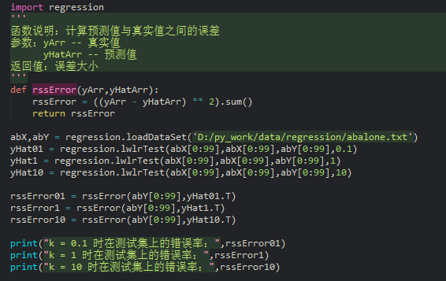
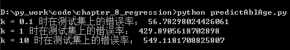
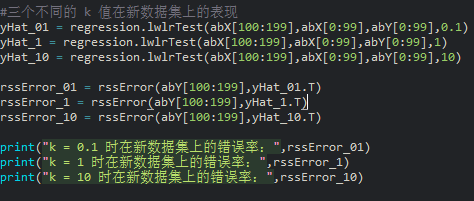
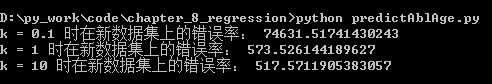
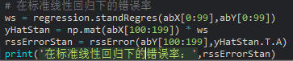

Blog
Blog
连续型数值预测-回归之预测鲍鱼年龄
接下来我们将回归应用于真实数据，这里有一份来自 UCI 数据集合的数据，记录了鲍鱼(一种介壳类水生动物)的年龄。鲍鱼年龄可以根据鲍鱼壳的层数推算得到。
通过设置不同的 k 值，将会得到不同的误差：

执行结果

从执行结果可以看出，使用较小的核可以得到较低的误差，那么为何不在所有的数据集上使用最小的核呢？
这是因为使用最小的核将造成过拟合，在测试集上误差最小的核对新数据不一定达到最好的效果，
下面就来看看它们在新数据上分别表现如何。
不同 k 值在新数据上的表现：

执行结果

在标准线性回归下的错误率:

执行结果：

可以看出，k = 0.1 时在新数据上的表现并不好，k = 10 时在新数据上的表现最好，
但是在测试集上表现却最差。与标准线性回归有着类似的预测结果，这表明必须在
未知数据上比较预测结果才能选取到最佳的预测模型。但局部加权线性回归存在个问题，
那就是每次必须在整个数据集上进行运算，增加了计算量。
数据集下载
完整代码